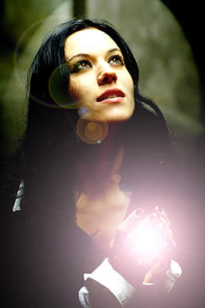

Entrevista
de Cristina Scabbia à Webzine Endemoniada - 2002
Como está
sendo o apoio dado a turnê de lançamento de Unleashed
Memories? Como a banda se sentiu tocando nos EUA?
Nós fizemos a turnê americana
em dezembro de 2001 com Moonspell, e devo dizer que nós
tivemos um incrível apoio dos americanos que foram aos
shows por nós, cantaram as músicas conosco. Foi
simplesmente maravilhoso e pensamos em voltar em breve.
Conte-nos
sobre Unleashed Memories. Como vocês chegaram a esse som
depressivo e profundo e de onde sai todas essas letras dolorosas?
Para ser honesta, nós não
sabemos. É um processo natural, algo espontâneo
no Lacuna Coil. Apenas esperamos a inspiração
e é assim que sentimos a melodia ou um riff com a vibração
certa. Nós trabalhamos nisso e em pouco tempo as músicas
parecem boas para nós e nos sentimos bem com isso.
Há
um grande crescimento de mulheres no cenário do metal.
Como você se sente em relação a isso?
Eu não acho que a presença
de uma mulher faz uma banda especial, diferente de uma banda
de apenas homens. Para mim parece ser algo natural já
que se pode encontrar ambos em um escritório, por exemplo.
Eu espero que as mulheres tenham mais espaço no cenário
do metal, mas com isso o que eu realmente quero é apenas
garotas talentosas e não mulheres que tem uma boa imagem
e então não são capazes de fazer o trabalho
delas como cantoras e músicas.
Quais são
as cantoras que você admirava antes de se tornar uma pelo
Lacuna Coil?
Não, eu nunca tive ídolos
a respeito da minha maneira de cantar ou agir.
Conte-nos
sobre Comalies. O que podemos esperar desse lançamento?
E quando poderemos obtê-lo nos EUA?
Comalies será lançado no
dia 29/10/02 nos EUA. É um álbum muito dinâmico
e variado. É o melhor que fizemos. Comalies contém
diversas atmosferas, do rock gótico para o metal com
um toque moderno. Vocês vão escutar uma vibração
positiva vinda desse álbum.
Há
algum outro projeto seu paralelo ao Lacuna Coil?
Não, eu estou totalmente dedicada
ao Lacuna, mesmo tendo recebido algumas propostas diferentes.
É o melhor jeito para gastar toda a sua energia em sua
música.
O que Cristina
faz para se divertir? Você vai dançar em alguma
boate, lê algum livro, assiste filmes? O que surpreenderia
nossos leitores em relação a você?
Bem, basicamente eu faço tudo que
uma pessoa normal faz no seu tempo livre. Vejo amigos em bares
ou discotecas, quando estou em casa leio as minhas cartas e
faço colagens, assisto tv. O fato é que infelizmente
não tenho muito tempo para fazer todas as coisas que
eu amaria fazer.
Algumas últimas
palavras?
Muito obrigada
pela entrevista e apoio. Nós estaremos lá em breve.
Estamos realmente desapontados pelo fato de termos cancelado
a turnê americana de setembro de 2002 porque o álbum
só será lançado em outubro. Mas nós
faremos a turnê em fevereiro de 2003 e mal podemos esperar.
Continuem ligados com o nosso site www.lacunacoil.it.
Extraída
de www.lacunacoil.hpg.com.br